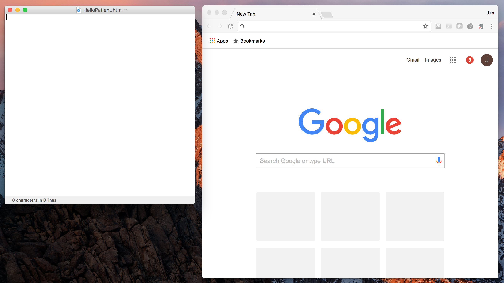
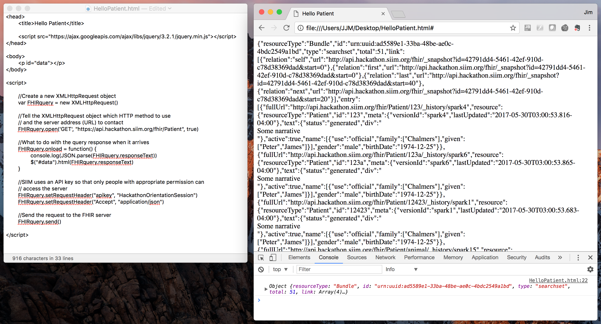
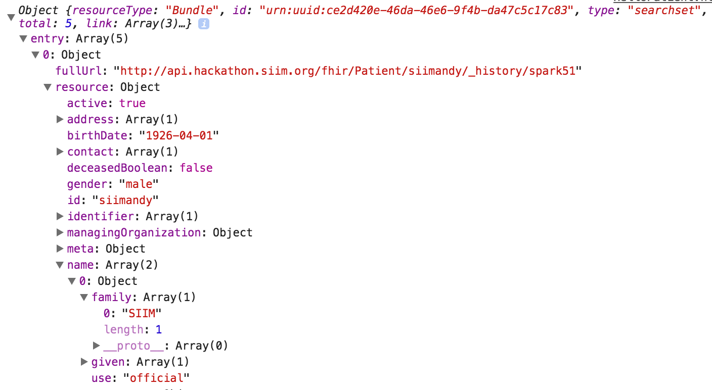

Creating your first FHIR application
In this tutorial we are going to construct a very basic FHIR based web application that will load a list of patients and display demograpihc information about a selected patient.
While no formal computer programming experience is needed, some familiarity with HTML and JavaScript will be beneficial. Creating a single page HTML and JavaScript FHIR application presents a few challenges. The webpage will be requesting information from a remote FHIR server. Depending on the FHIR server and web browser used when following this tutorial, things may not work as expected due to security settings.
- You will need three things to complete this tutorial:
- Text Editor
- Web Browser (Google Chrome recommended)
- FHIR Server to talk to (SIIM Hackathon Server recommended)
Open your favorite text editor or development environment and create a blank document called "HelloPatient.html". Save this file in an easily accessible location such as your desktop.
Step 1: Web Page Creation
We will begin by creating a simple web page using basic HTML. The tutorial sections will alternate between the visual elements using HTML and the behind the scenes elements using JavaScript.
First add a Head and Body to the webpage:
Save it and now open your "HelloPatient.html" file in your web browser (Google Chrome works well for debugging purposes later) and you should see this:

Step 2: FHIR Server Query
Now that we have a basic web page up and running, lets turn our attention toward getting a patient list from a FHIR server. This portion of the code will be created using JavaScript. For programming novices this may seem a little daunting, but I will try and explain each piece along the way. To access information from a remote server from our webpage we will use something called Cross-Origin Resource Sharing (CORS). Many web pages use CORS to load images, scripts, and other information from sites or domains which are different from the original web page. For example, if I do a search on Google.com for images of 'cat', the first few sample images that are displayed are loaded from 'http://www.pexels.com'. For security purposes most web browsers and servers do not allow CORS requests to be run from within scripts. However, to keep this tutorial simple we use a function called XMLHttpRequest() and a FHIR server with permissive Access-Control settings. Add the following code below the body of your webpage:
Save the file and refresh the web-page (Control-R or Command-R). The web page itself will look like nothing has changed. That is because we did not edit anything in the HTML portion of the file. Instead, lets open the JavaScript console and see what the script has output. In Google Chrome you can select JavaScript Console from the View->Developer menu (or type Command/Ctrl+Alt+J). The console should appear and you should see a large amount of text on the screen like this:

What you may notice about the text is that it is in XML format. If we add the following line to our script:
Below the "apikey" header it will tell the server to respond to our requests in JavaScript Object Notation (JSON) rather than XML. Since we are using JavaScript for the background programming, the ability to use JSON is extremely valuable and time saving. Add the line to your code, save the file, and refresh the browser. Now you should see output in the console like this:

In order to turn this JSON formatted text response into an actual JavaScipt object we will use a built-in function called "JSON.parse". This will allow us to easily reference and manipulate the data within the JSON object. Edit the console.log statement in your code to incorporate the JSON.parse function call.
Again, save and refresh to see the results. Now you should be able to navigate the JavaScript object from within the browser's JavaScript console window, similar to what is shown here:

Step 3: Displaying FHIR Data
To get our data out of the JavaScript console and into the browser window we will take advantage of a nearly ubiquitous JavaScript Library called JQuery. The JQuery package consists of a wide variety of useful functions that make it easy to reference and dynamically update elements of our HTML using JavaScript code.
JQuery uses several shorthand notations to simplify interactions with the HTML document even further. The "$" is a reference to the JQuery library. You will also notice the use of "#" and "." before words/variables. Hashtag ("#") is a shorthand reference to the HTML element attribute "id" and period (".") is shorthand for the HTML element attribute "class".
To use JQuery we must load the library with our web site application. Add the following to the<head> section of your web page:
To demonstrate these concepts in our HelloPatient application, replace the
'This is the Hello Patient Browser'
with
<p id="data"></p>
and add the following line of code beneath the console.log statement in our FHIRquery.onload function:
$("#data").html(FHIRquery.responseText)
Then save and refresh to examine the changes. Instead of the FHIR response data only appearing in the JavaScript console, you should now see it displayed in the web browser window as well.
Now we are getting somewhere. We have successfully queried a FHIR server and returned that information to the webpage. At this point though it doesn't look like much. If you read through the JSON object that is returned you will notice an element called "resourceType" with a value of "Bundle". Bundle is exactly what is sounds like - a bundle of information. In this case it is a bundle of patients. The Patient JSON also includes an element array called "entry", and this is where each of the bundle entries is located. If you navigate the JSON object in the JavaScript console you can drill down further and eventually find the patient information that we are looking for.
Step 4: Building a Patient List
To make this information truly useful, lets build a patient list on our web page using the results of our FHIR query. To ensure that we get consistent results, lets make our FHIR query a bit more specific. The SIIM hackathon FHIR server contains a set of simulated patients all with the family name of "SIIM". To search for and find only those patients with a surname of "SIIM" we can specify additional search parameters in our FHIR query.
Edit the FHIRquery.open URL so that it looks like this:
`https://api.hackathon.siim.org/fhir/Patient?name=SIIM`
Save your file and refresh the web page. You should now only get a FHIR response bundle containing five patients.

Now lets find the names of each of these patients. To do this we can drill down into the FHIR JSON response in the JavaScript console window until we find the information we are looking for. In this case it is buried several layers deep in entry->resource->name->given and entry->resource->name->family.

To create a patient list in the web browser rather than a text data dump a few changes to our code are needed. We will create a new JSON object called "patientList" as well as a new function called "patientListDisplay()". Add the following code snippit to the beginning of your <script> section:
In addition, we must define the patientList object and call the patientListDisplay function in order for the code to execute correctly. Delete the $("#data").html(FHIRquery.responseText) line from the FHIRquery.onload()` function and replace it with the following code:
We are almost there. If you were to save and refresh at this point you will see nothing output to the screen. That is because we have not yet defined the HTML element needed to display the list.
In the <body> section edit the <p id="#data"></p> line to instead say <ul id='htmlList'>Patient List<hr></ul>. Save and refresh and you should be rewarded with something like this:

Step 5: Viewing Patient Data
Every FHIR resource should contain a human readable representation of the data contained within it. In the final step of this tutorial we will display the text component for a patient selected from our patient list. This step will consist of three pieces:
- Create an HTML element to contain the patient data.
- Add a function within the script to display the patient information dynamically
- Recognize when a patient has been selected from the patient list and update the patient data display
For the first piece we will add a new set of HTML elements to contain our patient data. Below the patient list section in the <body> element of our webpage add the following HTML:
Next, lets add the necessary script code to fill the new HTML element in with a selected patient's information. Just like the patientListDisplay() function created earlier, we will make a new function dedicated to updating the patient information on the web page. Add the following `patientDataDisplay()` function below the `patientListDisplay()` function:
Finally, we have to tell the script what to do when a patient link has been selected from the patient list. Add the following code beneath the for-loop within the `patientListDisplay()` function:
Save the file and refresh your browser. You should now have the ability to both load the patient list from the FHIR server and to display information about each SIIM patient.

Congratulations on finishing your first FHIR based web application!
I hope this tutorial has been interesting and informative and inspires you to delve into FHIR and web application programming further.